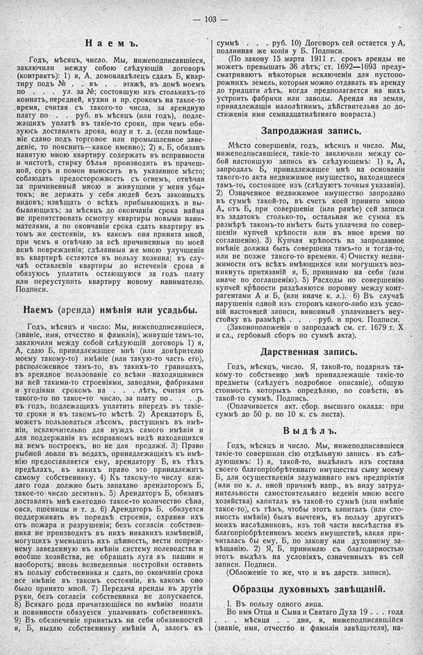

Лист источника 149
Скан

Распознанный текст
103
Наемъ.
Годъ, мѣсяцъ, число. Мы, нижеподписавшіеся,
заключили между собою слѣдующій договоръ
(контрактъ): 1) я, А, домовладѣлецъ сдалъ Б, квар-
тиру подъ № . . въ . . этажѣ, въ домѣ моемъ
по . . . . ул. за №; состоящую изъ столькихъ-то
комнатъ, передней, кухни и пр. срокомъ на такое-то
время, считая съ такого-то числа, за арендную
плату по . . руб. въ мѣсяцъ (или годъ), подле-
жащихъ уплатѣ въ такіе-то сроки, при чемъ обя-
зуюсь доставлять дрова, воду и т. д. (если помѣще-
ніе сдано подъ торговое или промышленное заве-
деніе, то пояснить—какое именно); 2) я, Б, обязанъ
нанятую мною квартиру содержать въ исправности
и чистотѣ, стирку бѣлья производить въ прачеш-
ной, соръ и помои выносить въ указанное мѣсто;
соблюдать предосторожность съ огнемъ, отвѣчая
за причиненный мною и живущими у меня убы-
токъ; не держать у себя людей безъ законныхъ
видовъ; извѣщать о всѣхъ прибывающихъ и вы-
бывающихъ; за мѣсяцъ до окончанія срока найма
не препятствовать осмотру квартиры новыми нани-
мателями, а по окончаніи срока сдать квартиру въ
томъ же состояніи, въ какомъ она принята мной,
при чемъ я отвѣчаю за всѣ причиненныя по моей
винѣ поврежденія; сдѣланныя же мною улучшенія
въ квартирѣ остаются въ пользу хозяина; въ слу-
чаѣ оставленія квартиры до истеченія срока я
обязуюсь уплатить остающуюся за годъ плату
или переуступить квартиру новому нанимателю.
Подписи.
Наемъ (аренда) имѣнія или усадьбы.
Годъ, мѣсяцъ и число: Мы, нижеподписавшіеся,
(званіе, имя, отчество н фамилія), живущіе тамъ-то,
заключили между собой слѣдующій договоръ 1) я,
А, сдаю Б, принадлежащее мнѣ (или довѣрителю
моему такому-то) имѣніе (или такую-то часть его),
расположенное тамъ-то, въ такихъ-то границахъ,
въ арендное пользованіе со всѣми находящимися
на ней такими-то строеніями, заводами, фабриками
и угодіями срокомъ на . . . . лѣтъ, считая отъ
такого-то по такое-то число, за плату по . . . .р.
въ годъ, подлежащихъ уплатить впередъ въ такіе-
то сроки и въ такомъ-то мѣстѣ. 2) Арендаторъ Б,
можетъ пользоваться лѣсомъ, растущимъ въ имѣ-
ніи, исключительно для нуждъ самого имѣнія и
для поддержанія въ исправномъ видѣ находящихся
на немъ построекъ, но не для продажи. 3) Право
рыбной ловли въ водахъ, принадлежащихъ къ имѣ-
нію предоставляется ему, арендатору Б, въ тѣхъ
предѣлахъ, въ какихъ право это принадлежитъ
самому собственнику. 4) Къ такому-то числу каж-
даго года должно быть запахано арендаторомъ Б,
такое-то число десятинъ. 5) Арендаторъ Б, обязанъ
доставлять мнѣ ежегодно такое-то количество сѣна,
овса, пшеницы и т. д. 6) Арендаторъ Б, обязуется
поддерживать въ порядкѣ строенія, охраняя ихъ
отъ пожара и разрушенія; безъ согласія собствен-
ника не производить въ нихъ никакихъ измѣненій,
могущихъ уменьшить ихъ цѣнность, вести попреж-
нему заведенную въ имѣніи систему полеводства и
вообще хозяйства, не обращать луга въ пашни и
наоборотъ; вновь возведенныя постройки оставить
въ пользу собственника и сдать, по окончаніи срока
все имѣніе въ такомъ состояніи, въ какомъ оно
было принято мной. 7) Передача аренды въ другія
руки, безъ согласія собственника не допускается.
8) Всякаго рода причитающіяся по имѣнію подати
и повинности обязуется уплачивать собственникъ.
9) Въ обезпеченіе принятыхъ на себя обязанностей
я, Б, выдаю собственнику имѣнія А, залогъ въ
суммѣ . . . . руб. 10) Договоръ сей остается у А,
подлинная же копія у Б. Подписи.
(По закону 15 марта 1911 г. срокъ аренды не
можетъ превышать 36 лѣтъ; ст. 1692—1693 преду-
сматриваютъ нѣкоторыя исключенія для пустопо-
рожнихъ земель, которыя можно отдавать въ аренду
до тридцати лѣтъ, когда предполагается на нихъ
устроить фабрики или заводы. Аренда на земли,
принадлежащія малолѣтнимъ, дѣйствительна до до-
стиженія ими семнадцатидѣтняго вовраста.)
Запродажная запись.
Мѣсто совершенія, годъ, мѣсяцъ и число. Мы,
нижеподписавшіеся, такіе-то заключили между со-
бой настоящую запись въ слѣдующемъ: 1) я, А,
запродалъ Б, принадлежащее мнѣ на основаніи
такого-то акта недвижимое имущество, находящееся
тамъ-то, состоящее изъ (слѣдуютъ точныя указанія).
2) Означенное недвижимое имущество запродано
въ суммѣ такой-то, въ счетъ коей принято мною
А, отъ Б, при совершеніи (или ранѣе) сей записи
въ задатокъ столько-то, остальная же сумма въ
размѣрѣ такомъ-то имѣетъ быть уплачена по совер-
шеніи купчей крѣпости или въ иное время по
соглашенію). 3) Купчая крѣпость на запроданное
имѣніе должна быть совершена тамъ-то и тогда-то,
или не позже такого-то времени. 4) Очистку недви-
жимости отъ всѣхъ имѣющихся или могущихъ воз-
никнуть притязаній я, Б, принимаю на себя (или
иначе по соглашенію). 5) Расходы по совершенію
купчей крѣпости раздѣляются поровну между конт-
рагентами А и Б, (или иначе к. л.). 6) Въ случаѣ
нарушенія одной изъ сторонъ какого-либо изъ усло-
вій настоящей записи, виновный уплачиваетъ неу-
стойку въ размѣрѣ . . . . руб. и проч. Подписи.
(Законоположенія о запродажѣ см. ст. 1679 т. X
и сл., гербовый сборъ по суммѣ акта).
Дарственная запись.
Годъ, мѣсяцъ, число. Я, такой-то, подарилъ та-
кому-то собственно мнѣ принадлежащіе такіе-то
предметы (слѣдуетъ подробное описаніе), общую
стоимость которыхъ опредѣляю, по совѣсти, въ
такой-то суммѣ. Подпись.
(Оплачивается акт. сбор. высшаго оклада: при
суммѣ до 50 р. по 10 к. съ листа).
Выдѣлъ.
Годъ, мѣсяцъ и число. Мы, нижеподписавшіеся
такіе-то совершили сію отдѣльную запись въ слѣ-
дующемъ: 1) я, такой-то, выдѣлилъ изъ состава
своего благопріобрѣтеннаго имущества сыну моему
Б, для осуществленія задуманнаго имъ предпріятія
(или по к. л. иной причинѣ напр., въ виду затруд-
нительности самостоятельнаго веденія мною всего
хозяйства) капиталъ въ такой-то суммѣ (или имѣніе
такое-то), съ тѣмъ, чтобы этотъ капиталъ (или сто-
имость имѣнія) былъ вычтенъ, въ пользу другихъ
моихъ наслѣдниковъ, изъ той части наслѣдства въ
благопріобрѣтенномъ моемъ имуществѣ, какая при-
читалась бы ему, Б, по закону или духовному за-
вѣщанію. 2) Я, Б, принимаю съ благодарностью
этотъ выдѣлъ на условіяхъ, означенныхъ въ сей
записи. Подписи.
(Обложеніе то же, что и въ дарств. записи).
Образцы духовныхъ завѣщаній.
I. Въ пользу одного лица.
Во имя Отца и Сына и Святаго Духа 19 . . . года
. . . . . . мѣсяца . . . . дня, я, нижеподписавшійся
(званіе, имя, отчество и фамилія завѣщателя), на-